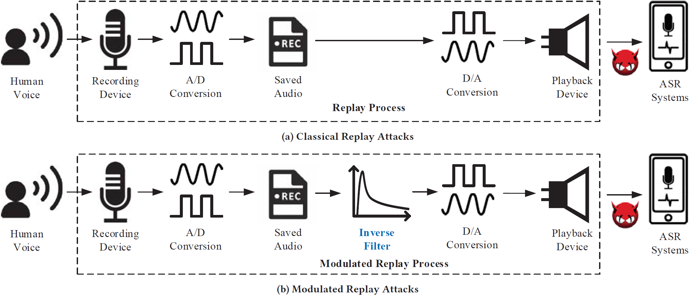
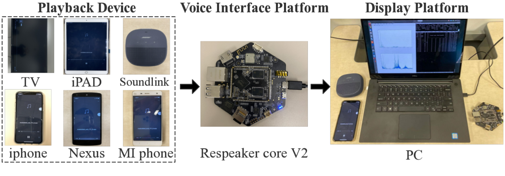

About
Modulated Replay Attack
Automatic speech recognition (ASR) systems have been widely deployed in modern smart devices to provide convenient and diverse voice-controlled services. Since ASR systems are vulnerable to audio replay attacks that can spoof and mislead ASR systems, a number of defense systems have been proposed to identify replayed audio signals based on the speakers’ unique acoustic features in the frequency domain. In our paper, we uncover a new type of replay attack called modulated replay attack, which can bypass the existing frequency domain based defense systems.
The basic idea is to compensate for the frequency distortion of a given electronic speaker using an inverse filter that is customized to the speaker’s transform characteristics. Our experiments on real smart devices confirm the modulated replay attacks can successfully escape the existing detection mechanisms that rely on identifying suspicious features in the frequency domain.
DualGuard Defense
To defeat modulated replay attacks, we design and implement a countermeasure named DualGuard. We discover and formally prove that no matter how the replay audio signals could be modulated, the replay attacks will either leave ringing artifacts in the time domain or cause spectrum distortion in the frequency domain. Therefore, by jointly checking suspicious features in both frequency and time domains, DualGuard can successfully detect various replay attacks including the modulated replay attacks. We implement a prototype of DualGuard on a popular voice interactive platform, ReSpeaker Core v2. The experimental results show DualGuard can achieve 98% accuracy on detecting modulate replay attacks.
Published in the ACM Conference on Computer and Communications Security (CCS) 2020.
Download the Paper Slides Poster Code Export Citation
@inproceedings{wang2020modreplay,
author = {Wang, Shu and Cao, Jiahao and He, Xu and Sun, Kun and Li, Qi},
title = {When the Differences in Frequency Domain Are Compensated: Understanding and Defeating Modulated Replay Attacks on Automatic Speech Recognition},
year = {2020},
isbn = {9781450370899},
publisher = {Association for Computing Machinery},
address = {New York, NY, USA},
url = {https://doi.org/10.1145/3372297.3417254},
doi = {10.1145/3372297.3417254},
booktitle = {Proceedings of the 2020 ACM SIGSAC Conference on Computer and Communications Security},
pages = {1103–1119},
numpages = {17},
keywords = {ringing artifacts, automatic speech recognition, modulated replay attack, frequency distortion},
location = {Virtual Event, USA},
series = {CCS '20}
}
Team
Modulated replay attack and the DualGuad defense were proposed by the following academic researchers:

Acknowledgments
This work is partially supported by the U.S. ARO grant W911NF17-1-0447, U.S. ONR grants N00014-18-2893 and N00014-16-1-3214, and the NSFC grants U1736209 and 61572278.